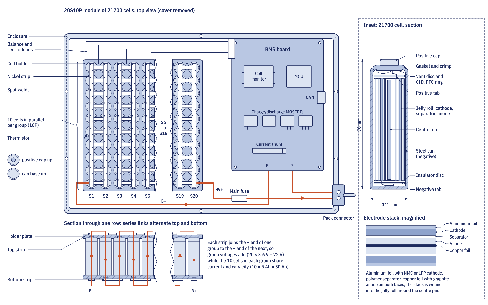

How a battery wears out
A lithium-ion pack loses capacity in two ways. Calendar ageing happens with time, whether or not the bike is ridden, and speeds up with heat and with a high state of charge: the rate roughly doubles for each 10 °C rise. Cycle ageing depends on how many charge cycles the pack does, how deep they are, the current and the temperature. The usual end of a pack's first life is 80 per cent of its rated capacity, when the range has fallen by a fifth, and many battery warranties are written in those terms.
Charging habits that extend life
- Avoid sitting at 100 per cent. A highly charged cell ages faster. Where the motorcycle or charger allows it, charge to 80 to 90 per cent for daily use and to full only before a long ride.
- Use the middle of the range. Cycling between 20 and 80 per cent can give two to three times as many equivalent full cycles as running from 0 to 100 per cent.
- Do not leave it empty. If cell voltage falls below about 2 V, the copper current collector starts to dissolve and the cell becomes unsafe to recharge. Recharge soon after a long ride.
- Use the right charger. A charger's set voltage must match the pack chemistry and cell count. A 72 V NMC pack charges to 84.0 V, while a 72 V LFP pack typically charges to 87.6 V, and the two chargers are not interchangeable. Many chargers will only start when the pack's management system authorises them, which prevents the wrong charger being used.
Lithium-ion cells are charged in two stages: constant current until the pack reaches its set voltage, then constant voltage while the current tapers. About 70 to 85 per cent of the energy goes in during the first stage, which is why the last 20 per cent is slow and why fast-charging times are quoted to 80 per cent.
Heat and cold
Cells perform and age best between about 15 °C and 35 °C. A pack parked in East African sun can reach 50 to 60 °C before it is ridden, so park in the shade and keep a removable pack indoors. Most battery management systems block charging outside about 0 to 45 °C, because charging a cold cell deposits metallic lithium on the anode. That lithium plating permanently reduces capacity and can grow dendrites that pierce the separator. Never fast charge a cold pack; a charge that takes 40 minutes at 25 °C can take twice as long at 5 °C as the system protects the cells.
A cold pack also sags more under load, because its internal resistance roughly doubles between 25 °C and 0 °C, so expect less power and an earlier low-battery cut-off on cold mornings.
Storing an electric motorcycle
For storage of weeks or months, leave the pack at 40 to 60 per cent charge in a cool, dry place out of direct sun. The difference is large: the course gives a capacity loss of 10 to 20 per cent in a year for a pack stored full at 40 °C, against a few per cent for one stored half charged at 15 to 25 °C. Check the charge every few weeks. Many packs put their management system into a deep sleep in storage, because an always-on system drawing 10 mA would drain 1 Ah in 100 hours and could empty a stored pack over months.
What the BMS does for you
The battery management system measures the voltage of every series group of cells, the temperatures and the current. It estimates the state of charge shown on the dashboard, sets the maximum charge and discharge currents, and opens the circuit if a cell goes over or under voltage, overheats or sees a short circuit. It also balances the cells: near the top of a charge it bleeds a small current from any group that is higher than the rest, typically 30 to 200 mA, so a badly drifted pack can need several long charges to recover. Leaving the charger connected for the full balancing period after a full charge helps.

Workshops read the group voltages from the BMS with diagnostic software. On an NMC pack at rest, a spread below 10 to 20 mV between the highest and lowest group is normal; a group that keeps falling within a few days of a balance charge points to a cell with high self-discharge, which balancing cannot cure.
Swapping instead of charging
With battery swapping, the rider exchanges an empty removable pack for a charged one in a minute or two, and the operator owns the batteries. Gogoro in Taiwan, the Gachaco service in Tokyo, and networks such as Spiro and Ampersand in East Africa work this way. The station reads each pack's identity and history and controls its charging rate and temperature, so the battery-care rules above become the operator's job. Riders of bikes with removable packs that they charge themselves, such as the Roam Air with its two 3.24 kWh packs, should follow them directly.
When a pack is unsafe
A pack that has been dropped, crashed or submerged, or that shows swelling, a sweet solvent smell, hissing, smoke, heat without use or leaking electrolyte must never be charged or refitted. If it can be done safely, move it outdoors to a non-combustible area away from buildings and vehicles, and treat it as hazardous waste for specialist handling.
A damaged lithium-ion cell can go into thermal runaway, a self-sustaining reaction that reaches 600 to 900 °C within seconds and releases flammable and toxic gases, and it can spread to neighbouring cells. Never open a traction pack or controller yourself: a nominal 72 V pack reaches 84 V when full, which is above the 60 V DC threshold for high-voltage work, and requires trained technicians with insulated tools. Inspect the charge port and connectors for looseness, burning or corrosion, and stop using a charger whose plug or lead gets hot.
The Repair section's pages for the battery, charge port and controller collect electric drive faults and checks. Our guide to how electric motorcycles work explains the full drivetrain, and chapters 5.4 and 5.5 of the course, Batteries and the BMS and Charging, swapping and standards, go into cell chemistry, charging standards and swap networks.
Frequently asked questions
Should I charge my electric motorcycle to 100 per cent?
For daily use, charging to 80 to 90 per cent where the system allows it slows ageing. Charge to full before a long ride, and avoid leaving the pack at 100 per cent for long periods.
How should I store an electric motorcycle battery?
At 40 to 60 per cent charge in a cool, dry place out of direct sun, checking the charge every few weeks. Never store a pack empty.
Can I charge an electric motorcycle in the cold?
Most battery management systems block charging below about 0 °C, because charging cold cells plates lithium on the anode. Let the pack warm up first and avoid fast charging when it is cold.
Can I use a different charger on my electric motorcycle?
Only one made for that pack. The charger voltage must match the cell chemistry and cell count; a 72 V NMC pack and a 72 V LFP pack need different chargers.
Written by Transitions Lab for the Moto Zero open motorcycle course. Text and illustrations are licensed CC BY-SA 4.0. Figures and values come from the course modules; see sources and credits.